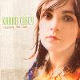

Celtic Lyrics Corner > Artists & Groups > Karan Casey > Chasing The Sun > Mother Earth's Revenge
|  | Mother Earth's Revenge |
| Credits : | Barry Kerr |
| Appears On : | Chasing The Sun |
| Language : | English |
Lyrics :
I am a hawk on a mountain side
A crashing wave on a winter's tide
The breeze that blows on a tall ship's sail
I am the kick of a salmon's tail
I'm up above and I'm down below
I'm black and white, I'm sand and I'm snow
I'm all around and I live within
I'm mother earth, the spirit in all living things
I'm winter white, oh I'm autumn gold
I'm summer's bloom, I'm spring's new soul
I'm every season with the birds that sing
I'm mother earth, the spirit in all living things
But you cut down the trees
Your fumes, they choke the breeze
You burn the world for oil
And you poison the soil
So I'll flood the plains
I'll drown you in acid rain
I'll pour forth a curse
And return you back to dust
When lightning strikes, well, you'll know I'm near
You knew the beauty, now feel the fear
Your storm rolls in, well, you better hide
I'll make you wish that you weren't alive
I am a hawk on a mountain side
A crashing wave on a winter's tide
The breeze that blows on a tall ship's sail
I am the kick of a salmon's tail